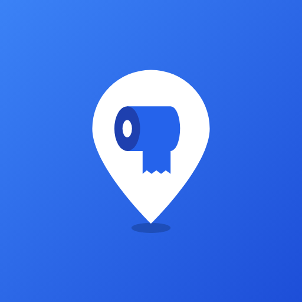

급해요
근처 화장실 찾기 · Find a restroom nearby
지금 열려 있는 가장 가까운 화장실을 거리와 도보 시간과 함께 바로 알려주는 앱입니다. 비밀번호 유무와 사용자들이 공유한 번호, 개방시간, 리뷰와 별점을 한눈에 확인할 수 있습니다.
- 공공데이터(행정안전부 공중화장실 정보) 기반 전국 공중·개방화장실
- 지금 열린 곳 중 가장 가까운 화장실과 도보 예상 시간
- 비밀번호 유무·번호 공유, 리뷰·별점·빠른 태그
- 인터넷이 약한 곳에서도 동작 (화장실 정보 앱 내장)